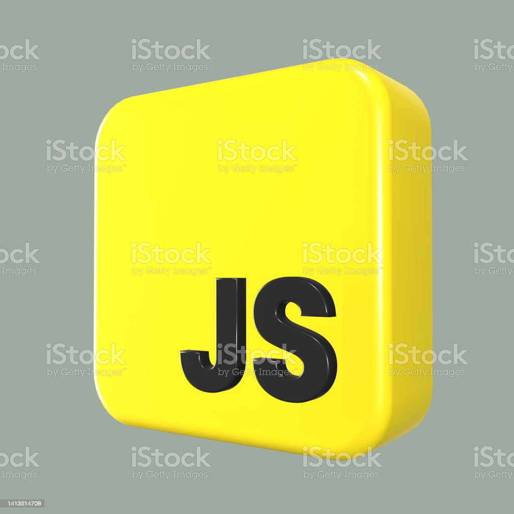
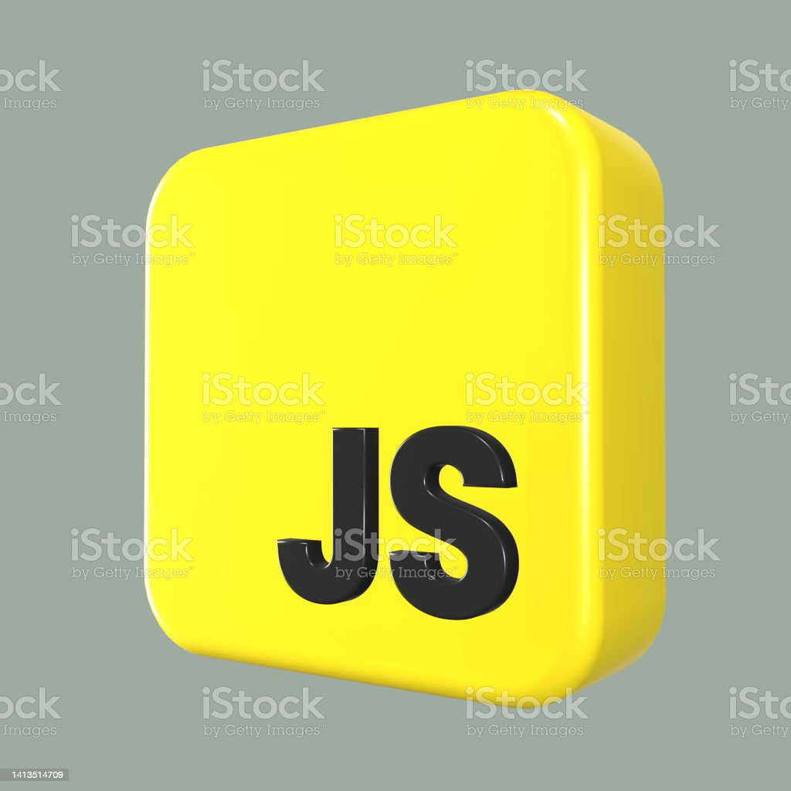

Типы языков программирования
Языки общего назначения и специализированные языки
Языки программирования общего назначения, такие как Python, позволяют решать довольно широкий круг задач – от автоматизации рутины в операционных системах и системном администрировании, создания веб-страниц до запуска моделей машинного обучения.
Специализированные языки программирования, как правило, ориентированы на конкретную платформу или решение узкой задачи. Так, SQL – язык для манипуляций запросами, который достаточно сильно привязан к особенностям работы баз данных.
Интерпретируемые и компилируемые языки
В интерпретируемых языках, например, PHP или Python, программа выполняется последовательно, строчка за строчкой в соответствии с исходным кодом.
Компилируемые языки, такие как Java или С, требуют, чтобы предварительно программист скомпилировал исходный код в машинный или объектный код – и лишь затем происходит запуск программы.
Низкоуровневые и высокоуровневые языки
Низкоуровневые языки программирования позволяют писать очень оптимизированный код, причём оптимизация происходит на уровне связи алгоритма и аппаратного обеспечения. Разработчик непосредственно влияет на то, как происходят вычисления и работа с памятью. Примером являются машинные коды, которые работают на уровне процессора или микрочипа.
Также к низкоуровневым можно отнести язык ассемблера, работающий с инструкциями процессора наподобие «положи это число в такой-то регистр», «возьми из этого регистра число и перепрыгни сюда, выполни следующую инструкцию». Таким образом, на языке ассемблера никто не пишет веб-приложения, но он отлично подходит для решения других задач. Несмотря на то, что язык C сегодня считается низкоуровневым, в своё время он был достаточно высокоуровневым, поскольку компилировался под разные аппаратные платформы.
Высокоуровневые языки программирования, например Python, позволяют писать код независимо от конкретной платформы. Также, благодаря высокоуровневым абстракциям, программист может не думать о том, сколько байт занимает та или иная переменная, в какие элементы памяти она помещается, и о деталях реализации на уровне аппаратного обеспечения.
Низкоуровневые и высокоуровневые языки программирования как инструменты хороши для решения своих конкретных задач. Так, низкоуровневый язык помогает, когда нужна оптимизация, максимальная производительность. А высокоуровневый, если необходимо отразить в коде сложный бизнес-процесс или требуется возможность поддержки кода другими программистами, чтобы можно было быстро понять, что именно происходит в коде. Он также оказывается востребован, когда используются разнородные модули в системе. Так, один модуль может получать данные с помощью веб-запроса, другой – подгружать модель машинного обучения и обрабатывать данные, третий – загружать результаты в базу данных, четвёртый – выводить результат на веб-страницу.
Логотипы некоторых языков, которые упомянались выше
 

© Мамонько Денис Александрович
Переход на главную страницу